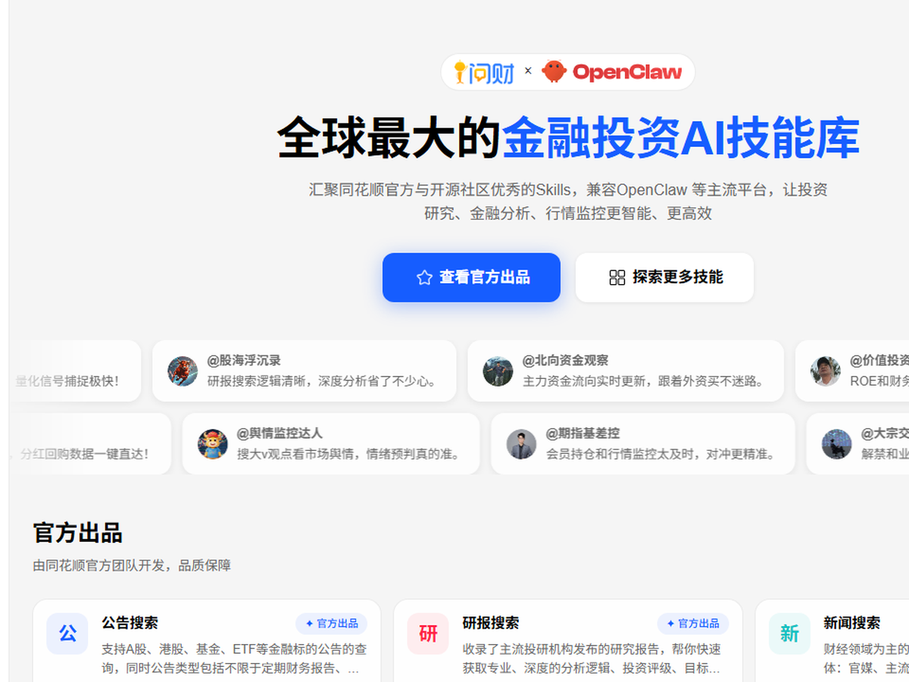
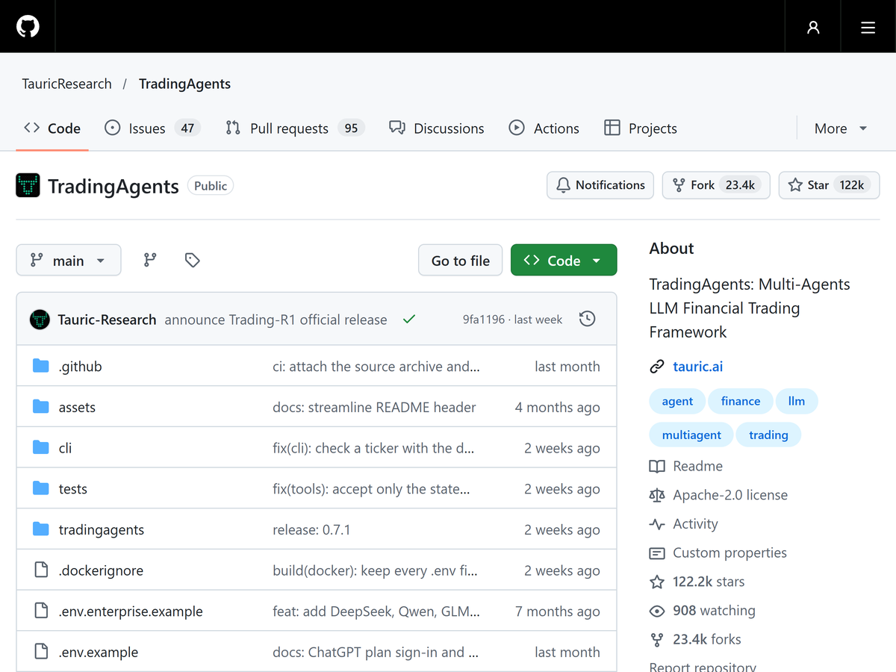
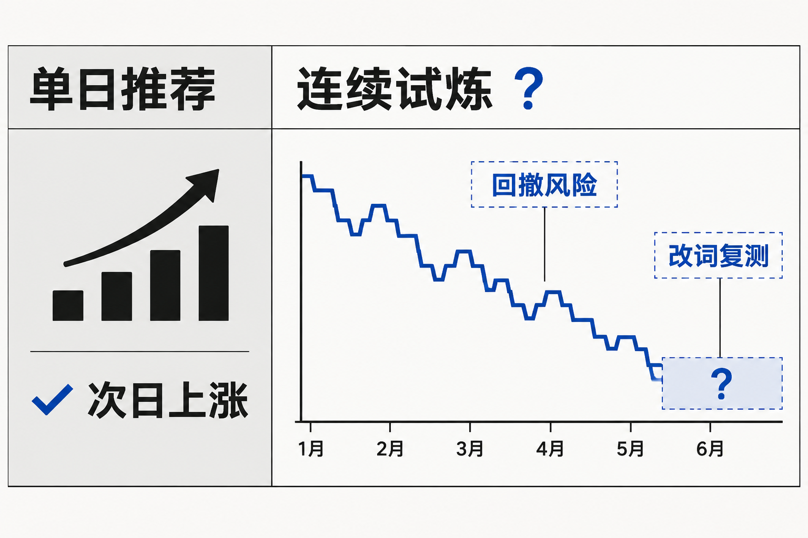
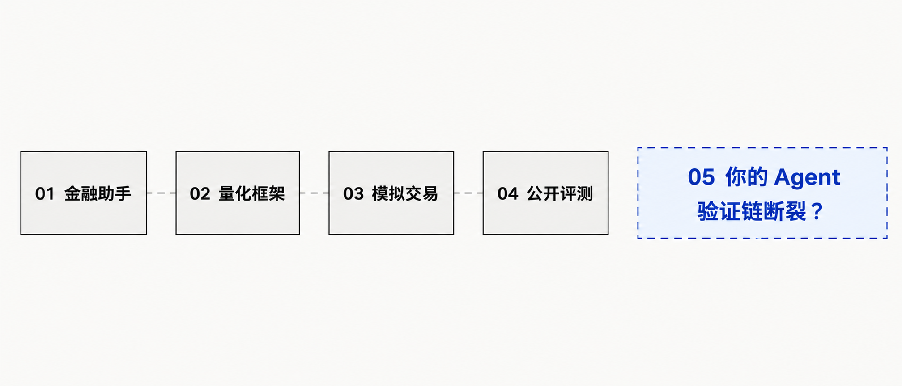
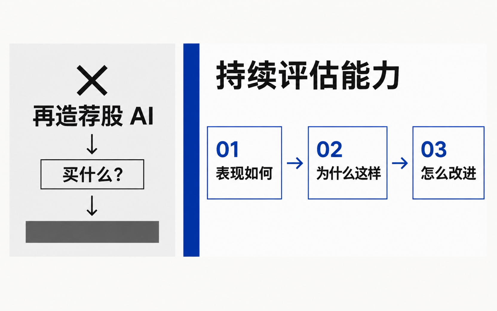

01AI ASSISTANT
金融 AI 助手
强项：整理信息、生成分析观点。
缺口：停在单轮建议，难接连续下单检验。


T+1、涨跌停、手数、费用——要的是一条连续曲线，不是一次回答。
同一段历史、同一套规则：它是变稳了，还是只是更激进了？
Agent 推荐了一只股票，理由听起来很充分；第二天，它真的涨了。这当然令人兴奋——但一次正确的推荐，足以说明它值得信任吗？

放回过去几个月，它究竟会怎么走？
面对下跌，它能控制多少风险？
改了提示词再测，表现真的变好了吗？
一份看起来很专业的分析报告，并不能回答这三个问题。
强项：整理信息、生成分析观点。
缺口：停在单轮建议，难接连续下单检验。
强项：支持历史数据与策略回测。
缺口：偏重代码规则，难直接容纳通用 Agent。
强项：贴近实盘节奏做纸面下单。
缺口：等未来很慢，且难在同一段行情反复对照。
强项：统一题目跑出公开榜单结果。
缺口：反映他人榜单，难直接验证你自己的 Agent。

把零散工具各自成立的能力，重新接成同一条可回溯、可对照的测试链条：接入 → 历史试炼 → 理解依据 → 同条件复测。
无论普通用户还是已有 Agent 的开发者，都能以可接受的成本开始测试。
在考虑 A 股规则的历史模拟里，观察连续决策与风险，而不是评价一次回答。
不只看到收益结果，还要能回顾关键交易与决策依据，知道问题出在哪。
改配置后尽量保持测试条件一致，不把市场波动误当成改进。
用户真正缺的不是又一个“买什么”的答案，而是一种持续判断与迭代的能力。

第三部分回答一个问题：这四项目标，如何变成一套能跑起来的系统。
四项要求不是功能清单，而是系统的设计约束。
技术路径、实际完成度与测试证据，留给第三、四部分。
openOutcry 如何围绕这四项目标，设计整套系统。